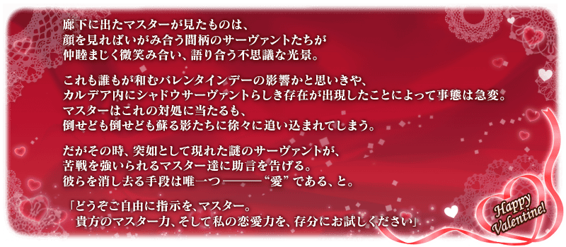
舉辦期間限定活動「愛的傳教士埃莫醬的聖瓦倫蒂諾！ ～迦勒底・苦澀・情人節2021～」！
被異樣的氣氛包圍的迦勒底與突然出現類似影從者的謎之存在。
為了解決異常事態，為了守護平穩的情人節日子，向不知愛者傳達愛吧！
※2月10日(三) 17:00修正
挑戰活動關卡收集「神愛點數」，入手活動交換道具「鎖定巧克力」「驚喜巧克力」，收下來自從者的情人節禮物吧！
另外，本活動中，會展開領取禮物時從者特別的訊息(附語音)！
並且，從本次交換後可賦予活動限定特效技能「狙擊之心(スナイプドハート)B」的「超級鎖定巧克力〔草莓〕」與「超級鎖定巧克力〔藍莓〕」做為新巧克力登場！
於活動道具交換交換禮物(概念禮裝)的話，會向對象從者賦予活動限定的特效技能！
◆有關「超級鎖定巧克力」◆
※【注意】「超級鎖定巧克力〔草莓〕」與「超級鎖定巧克力〔藍莓〕」只各可入手1個，合計2個。另外，「超級鎖定巧克力〔草莓〕」與「超級鎖定巧克力〔藍莓〕」各於「收到巧克力」「交付巧克力」使用1次，在使用時請注意。
※就算已經用「鎖定巧克力」「驚喜巧克力」交換禮物(概念禮裝)的情況，也可交換「超級鎖定巧克力〔草莓〕」與「超級鎖定巧克力〔藍莓〕」，向對象從者賦予活動限定的特效技能。屆時，無法入手禮物(概念禮裝)。 ※可用「鎖定巧克力」「驚喜巧克力」「超級鎖定巧克力〔草莓〕」與「超級鎖定巧克力〔藍莓〕」交換情人節禮物來領取的從者，只限有召喚履歴的從者。 ※本活動中，在每次領取禮物時的文字冒險部份開始前都必須下載語音，會比以往增加資料流量。詳情請觀看此處的公告。
※本頁面皆為開發中圖片。會有與實際圖片相異的情況。 ※一部份的關卡為日後開放。
◆活動舉辦期間◆
2021年2月10日(三) 17:00～2月24日(三) 11:59
◆活動參加條件◆
滿足以下條件的御主才能參加
・通過「特異點F 炎上汙染都市 冬木」
◆有關從者的注意◆
【2月10日(三) 17:00追記】
※埃莫〔卡蓮〕進行靈基再臨的話，卡面名稱會變成卡蓮・C・奧爾黛西亞。
【2月10日(三) 17:00圖片更新】
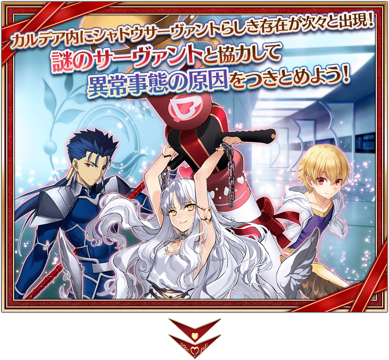
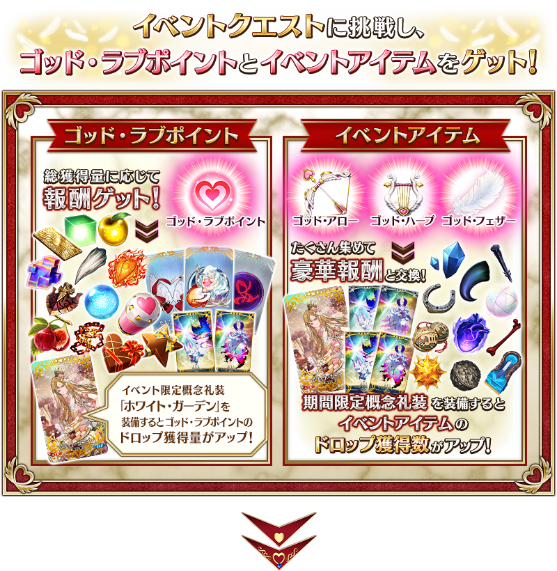
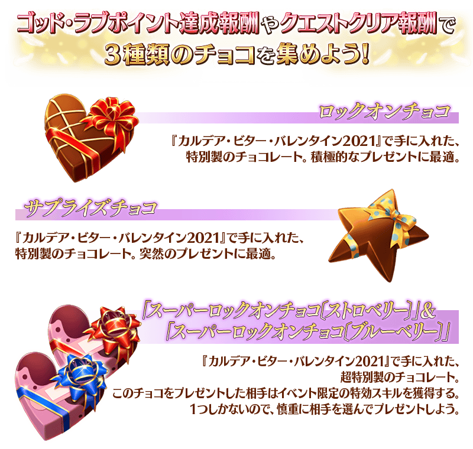
◆有關「超級鎖定巧克力」◆
※【注意】「超級鎖定巧克力〔草莓〕」與「超級鎖定巧克力〔藍莓〕」只各可入手1個，合計2個。另外，「超級鎖定巧克力〔草莓〕」與「超級鎖定巧克力〔藍莓〕」各於「收到巧克力」「交付巧克力」使用1次，在使用時請注意。
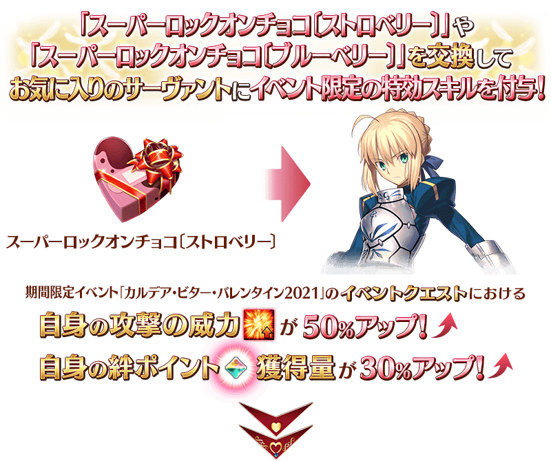
◆關於從瑪琇・基利艾拉特收到禮物事件的注意◆
※通過本活動主線關卡第1節的話，於「巧克力小姐的大驚小怪 -Valentine2016-」實裝從「瑪琇・基利艾拉特」收下禮物時的事件，會以附語音登錄到個人空間(マイルーム)的「圖鑑(マテリアル)」內「愛的傳教士埃莫醬的聖瓦倫蒂諾！ ～迦勒底・苦澀・情人節2021～」。
※於達文西工房的「稀有稜鏡交換」獲得概念禮裝「カルデアスタンダード」也不會發生從瑪琇・基利艾拉特收下禮物時的事件。
※2月10日(三) 17:00 活動名修正
享受故事的主線關卡會逐日開放。
通過主線關卡第2節的話，會開放收集活動道具的自由關卡。
之後的自由關卡是藉由通過主線關卡來開放。
【關卡的舉辦期間】
| 關卡的種類 | 舉辦期間 |
|---|---|
| 主線關卡第1節 主線關卡第2節 自由關卡 |
2021年2月10日(三) 17:00～ 2月24日(三) 11:59 |
| 主線關卡第3節 自由關卡 |
2021年2月11日(四) 17:00～ 2月24日(三) 11:59 |
| 主線關卡第4節 自由關卡 |
2021年2月12日(五) 17:00～ 2月24日(三) 11:59 |
| 主線關卡第5節 自由關卡 |
2021年2月13日(六) 17:00～ 2月24日(三) 11:59 |
| 主線關卡第6節 自由關卡 |
2021年2月14日(日) 17:00～ 2月24日(三) 11:59 |
| 主線關卡第7節 自由關卡 |
2021年2月15日(一) 17:00～ 2月24日(三) 11:59 |
| 主線關卡第8節 主線關卡終節 自由關卡 |
2021年2月16日(二) 17:00～ 2月24日(三) 11:59 |
【2月10日(三) 17:00圖片更新】
做為神愛點數達成報酬獲得的「鎖定巧克力」「驚喜巧克力」可在活動道具交換的「收到巧克力」「交付巧克力」交換成情人節的禮物(概念禮裝)。
※請注意可領取情人節禮物的從者，只限有召喚履歷的從者。沒有召喚履歷的者為對象外。 ※就算持有於2020年以前的活動入手的禮物(概念禮裝)情況，還是可發生收下禮物的事件，即使是持有同樣的禮物也能持有不只一個。 ※一部份從者的特別訊息未對應全螢幕。
◆交換期間◆
2021年2月10日(三) 17:00～3月3日(三) 11:59
※活動道具交換期間結束後「鎖定巧克力」「驚喜巧克力」會消失。
※「鎖定巧克力」及「驚喜巧克力」在活動舉辦期間結束後才能交換QP。
在活動道具交換選擇「收到巧克力」或「交付巧克力」
在活動道具交換選擇「收到巧克力」主要是從女性從者收到情人節禮物，選擇「交付巧克力」則是從男性從者。
關於一部份的從者，會是「收到巧克力」「交付巧克力」雙方的對象，收到的禮物和事件內容各有差異。
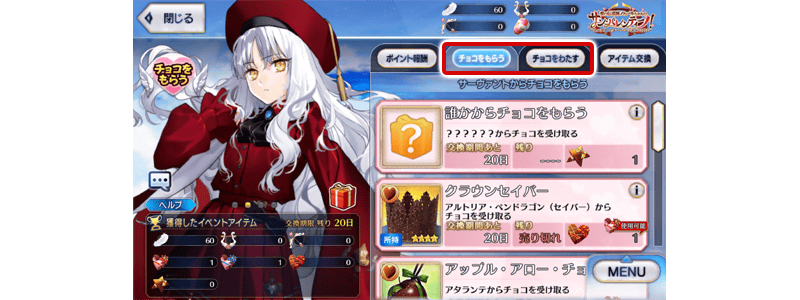 ※2月10日(三) 17:00圖片更新
選擇與巧克力交換的禮物
從顯示的禮物之中任意選擇，選擇「從誰收到巧克力(交付巧克力給誰)」吧！
※2月10日(三) 17:00圖片更新
※「鎖定巧克力」與「驚喜巧克力」在交換禮物時的活動內容及可入手的概念禮裝沒有差異。
本活動中，新巧克力「超級鎖定巧克力〔草莓〕」與「超級鎖定巧克力〔藍莓〕」登場。
「超級鎖定巧克力〔草莓〕」或「超級鎖定巧克力〔藍莓〕」交換成情人節的禮物(概念禮裝)，限在本活動期間中向對象從者賦予活動限定的特效技能「狙擊之心(スナイプドハート)B」。
「超級鎖定巧克力〔草莓〕」用在「收到巧克力」，「超級鎖定巧克力〔藍莓〕」用在「交付巧克力」，各1次。
◆交換期間◆
2021年2月10日(三) 17:00～3月3日(三) 11:59
※活動道具交換期間結束後「超級鎖定巧克力〔草莓〕」與「超級鎖定巧克力〔藍莓〕」會消失。
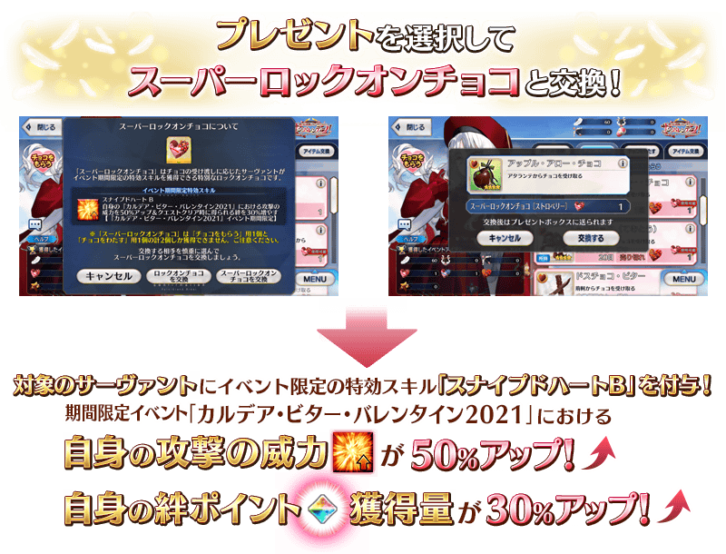 ※2月10日(三) 17:00圖片更新
◆有關「超級鎖定巧克力」◆
※【注意】「超級鎖定巧克力〔草莓〕」與「超級鎖定巧克力〔藍莓〕」只各可入手1個，合計2個。另外，「超級鎖定巧克力〔草莓〕」與「超級鎖定巧克力〔藍莓〕」各於「收到巧克力」「交付巧克力」使用1次，在使用時請注意。
※請注意可領取情人節禮物的從者，只限有召喚履歴的從者。無召喚履歴的從者為對象外。 ※就算已經用「鎖定巧克力」「驚喜巧克力」交換禮物(概念禮裝)的情況，也可交換「超級鎖定巧克力〔草莓〕」與「超級鎖定巧克力〔藍莓〕」，向對象從者賦予活動限定的特效技能。屆時，無法入手禮物(概念禮裝)。 ※對無論「收到巧克力」「交付巧克力」都能選擇的從者，將「超級鎖定巧克力〔草莓〕」或「超級鎖定巧克力〔藍莓〕」哪一方交換成禮物(概念禮裝)的情況，無法使用另一方的「超級鎖定巧克力」再次進行交換禮物(概念禮裝)。 ※於支援選擇畫面顯示的活動加成，會顯示其他御主「超級鎖定巧克力〔草莓〕」或「超級鎖定巧克力〔藍莓〕」向對象從者賦予活動限定的特效技能「狙擊之心(スナイプドハート)B」的情況。
「苦澀之影・挑戰」關卡是在限制回合內撃退不斷出現大量苦澀之影的關卡。
戰鬥結束時可獲得撃退的苦澀之影份活動點數與QP。
「苦澀之影・挑戰」關卡到2021年2月24日(三)之間，每日會各開放1關。開放的各關卡1天可挑戰1次。
※各關卡的開放期間為24小時。超過期間的情況，未通過的「苦澀之影・挑戰」關卡會消失。
◆關卡開放條件◆
通過期間限定活動「愛的傳教士埃莫醬的聖瓦倫蒂諾！ ～迦勒底・苦澀・情人節2021～」 第2節
※2月10日(三) 17:00 活動名修正
◆關卡開放期間◆
2021年2月10日(三) 17:00～2月24日(三) 11:59
撃退苦澀之影的話會馬上出現增援！
「苦澀之影・挑戰」關卡中，撃退的苦澀之影增援不會等回合經過就會馬上出現。
因此，1回合中能擊倒4名以上的敵人。
在限制回合內擊退不斷大量出現的苦澀之影吧！
専用的御主技能「神之火箭筒」
限定「苦澀之影・挑戰」關卡，變得可使用「神之火箭筒(ゴッドバズーカ)」做為第4個御主技能。
「神之火箭筒」1回合1次，可消耗靠神愛點數等獲得的「神之彈筒」來使用。
※就算於「苦澀之影・挑戰」關卡途中撤退的情況，在戰鬥中使用的「神之彈筒」也會消耗。
【御主技能「神之火箭筒」的效果】
賦予「敵單體的防禦力下降(1回合)＆寶具攻擊耐性下降(1回合)＆Quick攻擊耐性下降(1回合)＆Arts攻擊耐性下降(1回合)＆Buster攻擊耐性下降(1回合)」狀態
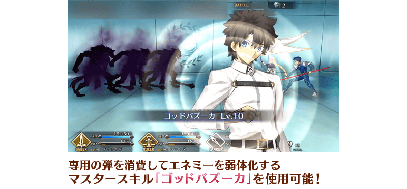
【「苦澀之影・挑戰」關卡的開放期間】
| 關卡 | 限制回合 | 敵職階 | 開放期間 |
|---|---|---|---|
| 苦澀之影・挑戰１ 〔Saber〕 | 3回合 |  |
2021年2月10日(三) 17:00～ 2月11日(四) 17:59 |
| 苦澀之影・挑戰２ 〔MoonCancer〕 | 3回合 | 2021年2月11日(四) 17:00～ 2月12日(五) 17:59 |
|
| 苦澀之影・挑戰３ 〔Archer〕 | 3回合 |  |
2021年2月12日(五) 17:00～ 2月13日(六) 17:59 |
| 苦澀之影・挑戰４ 〔Avenger〕 | 3回合 | 2021年2月13日(六) 17:00～ 2月14日(日) 17:59 |
|
| 苦澀之影・挑戰５ 〔Lancer〕 | 3回合 |  |
2021年2月14日(日) 17:00～ 2月15日(一) 17:59 |
| 苦澀之影・挑戰６ 〔Berserker〕 | 3回合 | 2021年2月15日(一) 17:00～ 2月16日(二) 17:59 |
|
| 苦澀之影・挑戰７ 〔Rider〕 | 3回合 |  |
2021年2月16日(二) 17:00～ 2月17日(三) 17:59 |
| 苦澀之影・挑戰８ 〔Alterego〕 | 3回合 |  |
2021年2月17日(三) 17:00～ 2月18日(四) 17:59 |
| 苦澀之影・挑戰９ 〔Caster〕 | 3回合 |  |
2021年2月18日(四) 17:00～ 2月19日(五) 17:59 |
| 苦澀之影・挑戰１０ 〔Foreigner〕 | 3回合 | 2021年2月19日(五) 17:00～ 2月20日(六) 17:59 |
|
| 苦澀之影・挑戰１１ 〔Assassin〕 | 3回合 |  |
2021年2月20日(六) 17:00～ 2月21日(日) 17:59 |
| 苦澀之影・挑戰１２ 〔Ruler〕 | 3回合 |  |
2021年2月21日(日) 17:00～ 2月22日(一) 17:59 |
| 苦澀之影・挑戰１３ 〔MoonCancer〕 | 3回合 | 2021年2月22日(一) 17:00～ 2月23日(二) 17:59 |
|
| 苦澀之影・挑戰１４ 〔Berserker〕 | 3回合 | 2021年2月23日(二) 17:00～ 2月24日(三) 11:59 |
※只有2021年2月23日(二)的關卡開放期間是19小時。
神愛點數的總獲得量到達一定量的話，可獲得達成報酬。
除了「鎖定巧克力」「驚喜巧克力」以外，還能獲得活動限定指令紋章等。
達成報酬可在點擊管理室(ターミナル)畫面右上的「活動報酬」鍵所顯示的「神愛點數報酬」畫面確認。
※神愛點數的總獲得量是計算在活動關卡掉落所獲得的神愛點數。
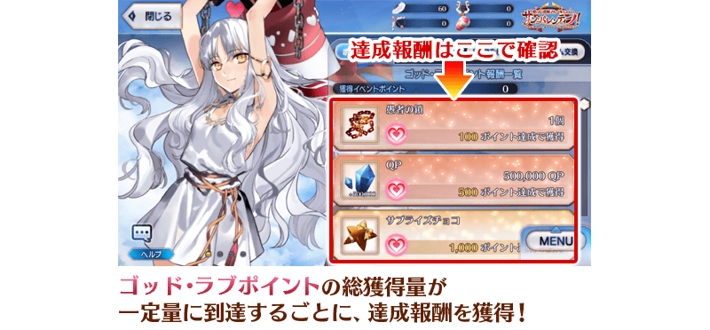 ※2月10日(三) 17:00圖片更新

【2月16日(二) 17:00追記】
以通過期間限定活動「愛的傳教士埃莫醬的聖瓦倫蒂諾！ ～迦勒底・苦澀・情人節2021～」終節及「終局特異點」的御主做為對象開放高難易度的「挑戰關卡」。
「挑戰關卡」就算通過後也不會消失，可以變更從者和概念禮裝的組合等後無限次挑戰。
※關卡通過報酬、戰利品、御主EXP、魔術禮裝EXP、絆點數只可在初次通過時獲得。
◆挑戰關卡開放時間◆
2021年2月16日(二) 17:00～
◆挑戰關卡參加條件◆
滿足以下條件的御主才能參加
・通過期間限定活動「愛的傳教士埃莫醬的聖瓦倫蒂諾！ ～迦勒底・苦澀・情人節2021～」的終節
・通過「終局特異點」
◆挑戰關卡初次通過報酬◆
傳承結晶 1個

超值攻略方法・其1
做為初登場從者的「★5(SSR)5(SSR)卡蓮・Ｃ・奧爾黛西亞(埃莫〔卡蓮〕)」，在期間限定活動「愛的傳教士埃莫醬的聖瓦倫蒂諾！ ～迦勒底・苦澀・情人節2021～」的活動關卡中會得到「自身的攻擊威力提升100%」及在關卡通過時得到的「自身的絆點數獲得量提升50%」的加成！
※2月10日(三) 17:00修正
※2月10日(三) 17:00圖片更新
◆有關從者的注意◆
【2月10日(三) 17:00追記】
※埃莫〔卡蓮〕進行靈基再臨的話，卡面名稱會變成卡蓮・C・奧爾黛西亞。
超值攻略方法・其2
裝備活動限定概念禮裝讓神愛點數的掉落獲得量提升！
裝備可靠活動道具交換入手的活動限定概念禮裝「★5(SSR)ホワイト・ガーデン」的話，神愛點數的掉落獲得量會提升。
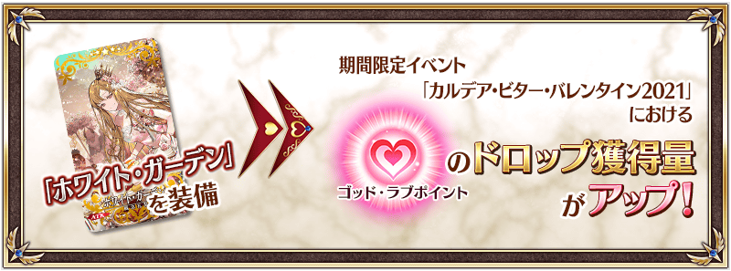 ※2月10日(三) 17:00圖片更新
另外，裝備自從者收下「情人節禮物」概念禮裝的話，神愛點數的掉落獲得量也會提升！
【情人節的禮物】
超值攻略方法・其3
裝備期間限定概念禮裝讓活動道具的掉落獲得數提升！
裝備在聖晶石召喚Pick Up的期間限定概念禮裝「★5(SSR)クック・ハート」「★4(SR)ビター・ジュエル」「★3(R)ディア・フレンド」的話，活動道具「神之弓箭」「神之豎琴」「神之羽毛」各自的掉落獲得數會提升。
※請注意各關卡的道具掉落率並非100％。
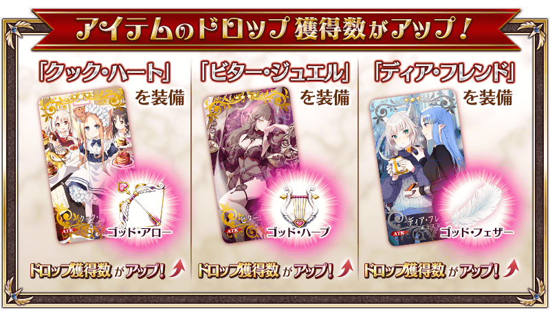
活動道具可自點擊管理室(ターミナル)畫面右上「活動報酬」鍵所顯示的「活動道具交換」畫面，交換以下的道具。
※關於英靈結晶・流星之芙芙ALL★4(HP)、英靈結晶・日輪之芙芙ALL★4(ATK)，在通過本活動的主線關卡後才能交換。 ※「鎖定巧克力」「驚喜巧克力」「神之彈筒」「超級鎖定巧克力〔草莓〕」「超級鎖定巧克力〔藍莓〕」在活動期間結束後可交換成QP。 ※活動道具交換期間結束後「神之弓箭」「神之豎琴」「神之羽毛」「鎖定巧克力」「驚喜巧克力」「神之彈筒」「超級鎖定巧克力〔草莓〕」「超級鎖定巧克力〔藍莓〕」會消失。
◆交換期間◆
2021年2月10日(三) 17:00～3月3日(三) 11:59
◆能用神之弓箭交換的道具◆
|
【活動限定概念禮裝】 【技能強化＆靈基再臨素材】 【靈基再臨素材】 【其他道具】 |
◆能用神之豎琴交換的道具◆
|
【活動限定概念禮裝】 【技能強化＆靈基再臨素材】 【靈基再臨素材】 【其他道具】 |
◆能用神之羽毛交換的道具◆
|
【活動限定概念禮裝】 【技能強化＆靈基再臨素材】 【其他道具】 |
◆能用「鎖定巧克力」、「驚喜巧克力」、「神之彈筒」、「超級鎖定巧克力〔草莓〕」「超級鎖定巧克力〔藍莓〕」交換的道具◆
|
【其他道具】 |
| 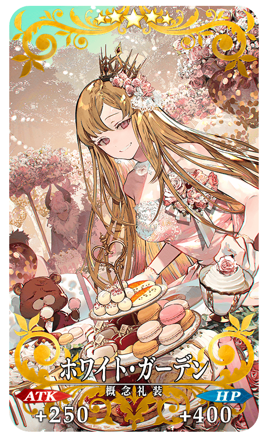 |
★★★★★SSR
|

|
【活動限定】 |
| 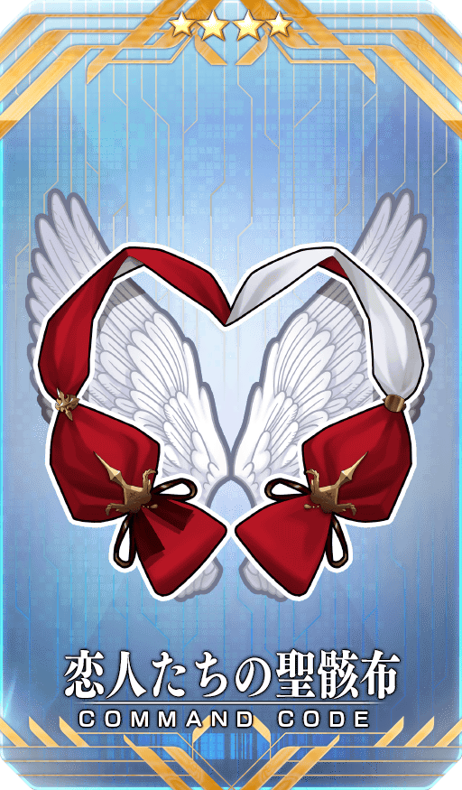 |
★★★★SR |
| 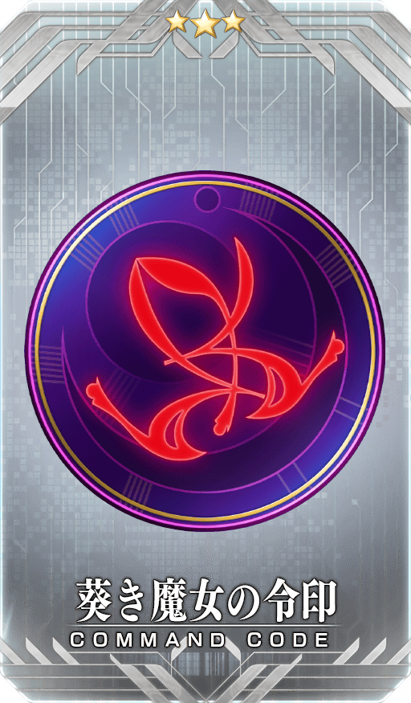 |
★★★R |
【2月16日(二) 17:00追記】
「★5(SSR)卡蓮・Ｃ・奧爾黛西亞(埃莫〔卡蓮〕)」的靈衣開放權做為期間限定活動「愛的傳教士埃莫醬的聖瓦倫蒂諾！ ～迦勒底・苦澀・情人節2021～」的報酬登場！
通過本活動的主線關卡後，可入手上述靈衣開放權做為活動道具交換的報酬。
另外，「★5(SSR)卡蓮・Ｃ・奧爾黛西亞(埃莫〔卡蓮〕)」的靈衣開放權，會在本活動的活動道具交換期間結束後追加到達文西工房的「稀有稜鏡交換」。
可用稀有稜鏡2個交換入手上述靈衣開放權。
想要靈衣開放的話，除了靈衣開放權外必須再加上一些開放條件。
◆追加時間◆
2021年3月3日(三) 17:00～(預定)
※追加到「稀有稜鏡交換」的「★5(SSR)卡蓮・Ｃ・奧爾黛西亞(埃莫〔卡蓮〕)」的靈衣開放權為永久，沒有交換期限。
◆交換條件◆
滿足以下條件的御主才能交換
・通過「特異點F 炎上汙染都市 冬木」
・未入手「★5(SSR)卡蓮・Ｃ・奧爾黛西亞(埃莫〔卡蓮〕)」的靈衣開放權
◆有關靈衣開放權的注意◆
※本次追加的「★5(SSR)卡蓮・Ｃ・奧爾黛西亞(埃莫〔卡蓮〕)」的簡易靈衣會配合外觀變化一部份語音。
※請注意未持有「★5(SSR)卡蓮・Ｃ・奧爾黛西亞(埃莫〔卡蓮〕)」的情況，可入手靈衣開放權。但無法進行靈衣開放。
◆追加道具(永久)◆
| 追加道具 | 能交換次數 | 1次交換所需的 稀有稜鏡數 |
|---|---|---|
| 「★5(SSR)卡蓮・Ｃ・奧爾黛西亞(埃莫〔卡蓮〕)」的靈衣開放權 | 1次 | 2個 |
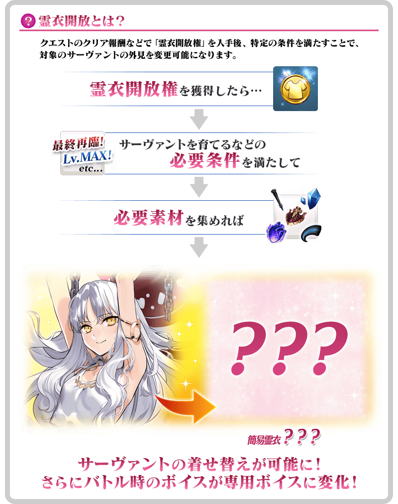

「靈衣開放」是自強化畫面進行。
※「靈衣開放」後會自動切換戰鬥角色和圖示。若想回到「靈衣開放」前的狀態和變成其他再臨階段的情況，可自從者詳細畫面變更。 ※進行「靈衣開放」不會讓職階和能力等有所變化。
【2月10日(三) 17:00追記】
強化「★3(R)子吉爾」的特別關卡「從者強化關卡」，在迦勒底之門永久追加。
不僅進行對象從者的強化，也可獲得聖晶石做為關卡通過報酬。
※請注意在從者強化關卡沒有文字冒險部份。
◆追加時間◆
2021年2月10日(三) 17:00～
◆開放條件◆
持有的強化對象從者，必須使其最終再臨。
※未持有對象從者的話，不會出現關卡。
※關卡沒有舉辦期限。
在2021年2月10日(三)維修後反映的更新內容之中，介紹代表性的內容。
◆追加時間◆
2021年2月10日(三) 17:00～
御主檔案的生日修改成可設定成2月29日
御主檔案的生日設定中，生日修改成可設定成2月29日。
另外透過次此修改，已經有設定生日的情況，可再設定一次生日。
※沒有2月29日的年份會在2月28日播放誕生日。
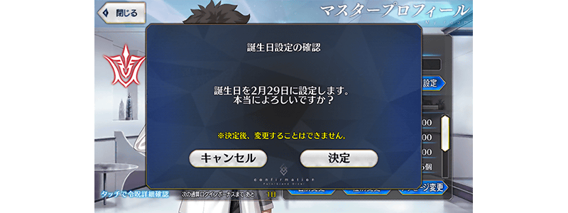
【2月10日(三) 17:00圖片更新】
其他還有，期間限定「情人節2021Pick Up召喚(每日交替)」同時舉辦！
關於詳情，請自下述橫幅確認。